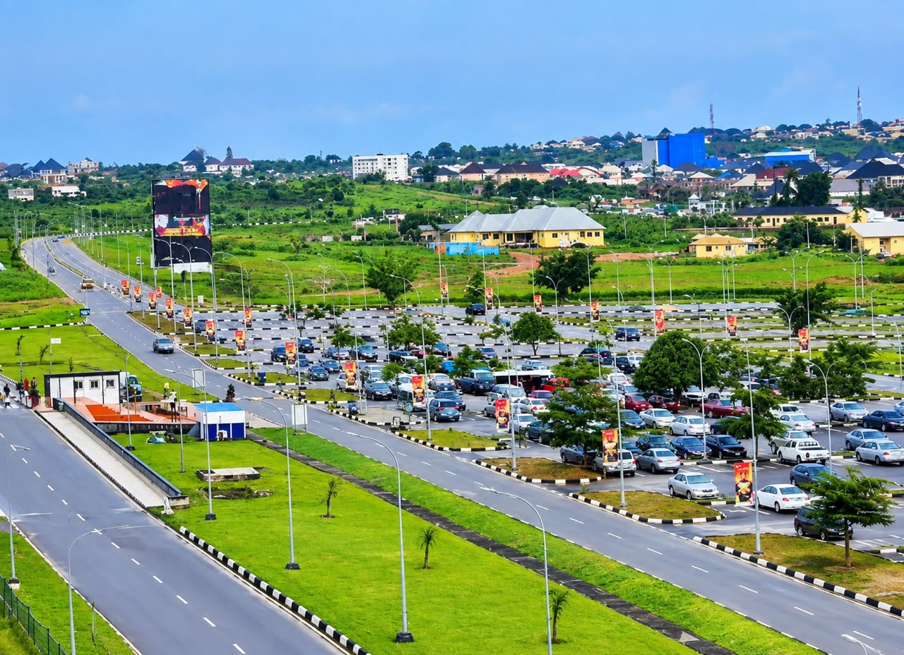
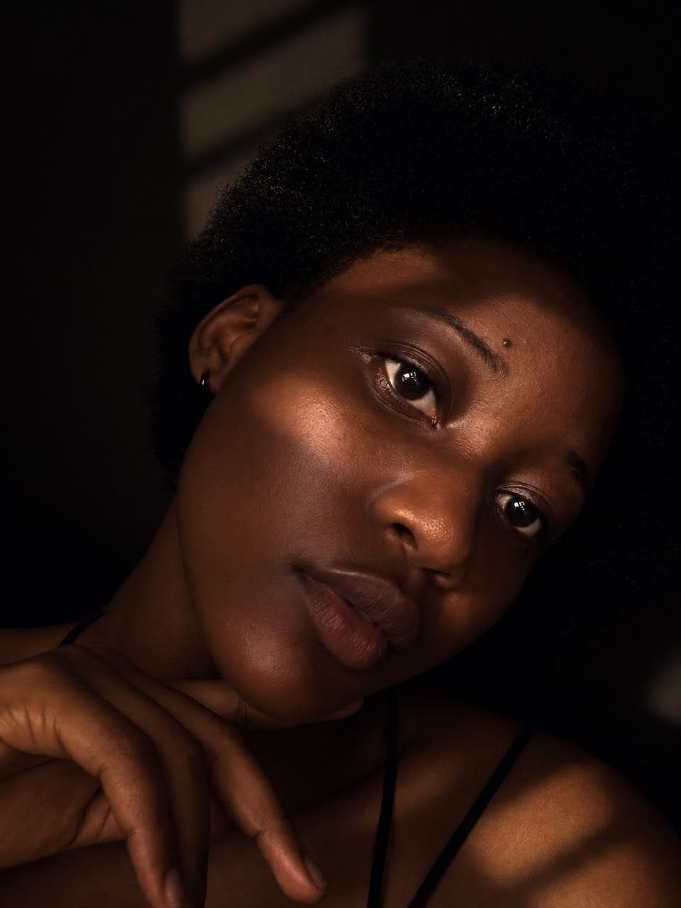

DELTA STATE, NIGERIA

Delta State, nicknamed “The Big Heart”, is a vibrant oil-rich state in Nigeria
South-South region.
Created on 27 August 1991 from the former Bendel State, its capital is Asaba (on the
banks of the
River Niger), while Warri serves as the major commercial and industrial hub.
Home to diverse ethnic groups — Urhobo, Isoko, Itsekiri, Ijaw, and Anioma (Delta Igbo)
communities —
the state blends rich cultural heritage with economic strength. It is one of Nigeria
leading oil
and gas producers, yet also thrives on agriculture, fishing, and commerce.
The beauty of Delta State shines through its natural and historical attractions:
Rapid Rush Rafting water

Hello! My name is Ogbonnaya Ifunnaya. I am a software development student
studying WDD130, and I am excited to learn more about web design and development.